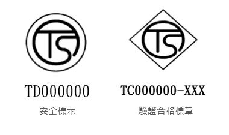

機械設備器具安全相關管理法規(含風險評估)
源頭管理法規、風險評估技術與實務案例
2026-06-30
講師簡介
姓名：何明信
學歷：成大環醫所 、職安衛技師
經歷：檢查員30年 (製造、危機設、營造、化工職衛科、專委)
現職：114年退休
E-mail：he.peter70@gmail.com
機械設備器具安全相關管理法規
課程目標
瞭解機械源頭管理法規架構 (職安法 §5, §7, §8, §9)
掌握機械安全風險評估方法 (ISO 12100)
學習實務防護案例與對策
本課程依據“職業安全衛生法”及“機械設備器具安全標準”等相關法規編製
教材重點說明
1. 合理科學管理？「資料驅動」（Data-Driven)
2. 國際勞工組織 ILO C119號公約
- C119 - Guarding of Machinery Convention, 1963 (No. 119)
- R118 - Guarding of Machinery Recommendation, 1963 (No. 118)
- 禁止流通（禁止販售、租賃、轉讓）
各國應透過法律或其他措施，禁止販售、租賃、轉讓任何危險部件（如傳動裝置、飛輪、齒輪等）未裝設適當防護裝置的機械。展覽用的機械也應受到限制。 - R118號建議書：更詳細的指導
應在機械的設計階段就納入安全防護的考量。
建議盡可能採用自動安全裝置來保護操作者。
任何勞工都不應被要求使用未設防護裝置的機械。
- 禁止流通（禁止販售、租賃、轉讓）
單元一：機械源頭管理法規
為何需要源頭管理？
過去僅靠雇主「末端管理」，無法杜絕有缺陷機械流入市場
國際公約核心原則：
無適當防護裝置之機械禁止流通
勞工不應使用無安全裝置之機械
Note
國際勞工組織（ILO）第119號公約：機器防護公約（1963年）
職安法第5條第2項：設計、製造、輸入者應於各階段實施風險評估
職業安全衛生法規架構

第7條 – 指定機械申報登錄 (型式檢定)
製造者、輸入者、供應者或雇主，對於中央主管機關指定之機械、設備或器具，其構造、性能及防護非符合安全標準者，不得產製運出廠場、輸入、租賃、供應或設置。
符合安全標準 → 應於資訊申報網站登錄，並於產品明顯處張貼安全標示 (TD)
但屬於公告列入型式驗證之產品，應依第8條及第9條辦理
罰則：違反第7條第1項 → 新臺幣20~200萬元
第8條 – 型式驗證
製造者或輸入者對於中央主管機關公告列入型式驗證之機械、設備或器具，非經認可之驗證機構實施型式驗證合格及張貼合格標章，不得產製運出廠場或輸入。
- 目前公告項目：交流電焊機用自動電擊防止裝置 (自107年7月1日起適用)
免驗證情形（第8條第2項）：
依其他法律實施檢查、檢驗、驗證
國防軍事用途
科技研發、測試專用機型
商業樣品或展覽品
其他特殊情形經核准
第9條 – 標章管理與市場查驗
未完成登錄申報或未取得型式驗證合格者，不得使用安全標示、驗證合格標章或易生混淆之類似標章
製造者、輸入者應建立及保存產銷資料
中央主管機關或勞動檢查機構得進行抽驗及市場查驗，業者不得規避、妨礙或拒絕

指定機械申報種類 (施行細則第12條)
| 項次 | 機械設備 | 項次 | 機械設備 |
|---|---|---|---|
| 1 | 動力衝剪機械 | 7 | 防爆電氣設備 |
| 2 | 手推刨床 | 8 | 光電式安全裝置 |
| 3 | 木材加工用圓盤鋸 | 9 | 刃部接觸預防裝置 |
| 4 | 動力堆高機 | 10 | 反撥預防裝置及鋸齒接觸預防裝置 |
| 5 | 研磨機 | 11 | 其他經指定公告者 |
| 6 | 研磨輪 |
申報登錄自我宣告流程

佐證方式：
委託認可檢定機構實施型式檢定合格
委託國內外認證產品驗證機構審驗合格
製造者完成自主檢測及製程一致性查核
安全標示 與 合格標章
| 制度 | 標示 | 格式 | 圖示 | 適用 |
|---|---|---|---|---|
申報登錄 (型式檢定) |
TD | 圖式 + 識別號碼 (TD + 指定代碼) |  |
指定機械 |
| 型式驗證 | TC | 圖式 + 識別號碼 (TC + 代碼 + 機構代號) |  |
公告列入型式驗證產品 |
標示應使用不易變質材料、牢固張貼於本體明顯處（銘版上或鄰近商標）
產品之邊境管制與先行放行機制
輸入產品因尚未取得測試合格證明而被通關限制時，符合下列情形得申請先行放行：
已向國內檢定機構、驗證機構申請檢測試驗，尚未取得合格證明
其他特殊情形經核准
須向勞動部職安署申請「輸入先行放行通知書」，海關憑以放行，產品須限制貯存地點，俟檢驗合格及完成申報後始得進入市場
上架監督查核與違規處分
廢止或撤銷登錄之情事：
購樣、取樣檢驗結果不符合安全標準
因瑕疵造成重大傷害或危害
以詐欺或虛偽不實方法取得登錄 → 撤銷
未依規定保存符合性聲明書及技術文件
經撤銷或廢止登錄者，原申報文件不得再供申報之用
機械設備器具安全三大管理辦法
法源依據
職業安全衛生法第7條、第8條、第9條
為落實 源頭管理 及 後市場監督 而訂定
| 辦法名稱 | 規範核心 |
|---|---|
| 機械設備器具安全資訊申報登錄辦法 | 自我宣告、安全標示(TD)、技術文件保存 |
| 機械類產品型式驗證實施及監督管理辦法 | 強制驗證、合格標章(TC)、先行放行 |
| 機械設備器具監督管理辦法 | 產品監督、市場查驗、不合格品處理 |
第一部分：機械設備器具安全資訊申報登錄辦法
適用範圍：
職安法第7條第1項指定之機械（施行細則第12條）
但已列入型式驗證公告者，依第8條辦理 (交流電焊機安全裝置)
申報者：製造者或輸入者
資訊網站：中央主管機關指定之申報網站 (tsmark.osha.gov.tw)
安全標示：完成登錄後張貼於產品之識別標示
免申報登錄情形
中央主管機關指定之產品有下列情形之一者，得免申報登錄：
依其他法律有實施檢查、檢驗、驗證、認可或管理
供國防軍事用途，並有國防部或其直屬機關證明
限量製造或輸入僅供科技研發、測試用途之專用機型，經核准
非供實際使用或作業用途之商業樣品或展覽品，經核准
輸入供加工、組裝後輸出或原件再輸出，經核准
其他特殊情形，經核准
符合安全標準之佐證方式
申報者宣告其產品符合安全標準，應以下列方式之一佐證：
一、委託經中央主管機關認可之檢定機構實施型式檢定合格。
二、委託經國內外認證組織認證之產品驗證機構審驗合格。
三、製造者完成自主檢測及產品製程一致性查核，確認符合安全標準。
但書：動力衝剪機械、木材加工用圓盤鋸、研磨機、防爆燈具、防爆電動機、防爆開關箱等六種產品，僅限採型式檢定合格。
自主檢測之特別規定
採自主檢測及產品製程一致性查核者，應符合：
自主檢測由經認證之檢測實驗室實施
產品製程一致性查核由經認證之機構實施
檢測人員資格符合法令規定
單品申報登錄者：得免附產品製程符合一致性證明。
申報登錄應上傳之資料
申報者應上傳加蓋承辦者及負責人印章之資料（電子檔限不可編輯之圖檔或PDF）：
符合性聲明書
設立登記文件（工廠、公司或商業登記等）
測試證明文件（型式檢定合格證明、審驗合格證明或自主檢測報告，效期3個月以上）
產品基本資料（型式名稱說明書、安裝操作保養維修說明書、危險對策）
產品安全裝置及配備基本資料（品名、規格、重要零組件驗證報告等）
其他要求之技術文件
登錄與保存
申報登錄網站 (tsmark.osha.gov.tw)
第9條：登錄內容有變更 → 30日內申請變更登錄
第11條：符合性聲明書及相關技術文件 → 保存至該產品停產後至少10年
第12條：登錄資訊得保密或限閱；可公開者以網路查詢下載或重製提供
第13條：文件以中文為主；外文技術文件應有正體字中譯本（英文以外並附英譯本）
登錄完成與效期
完成登錄 → 中央主管機關給予登錄字號及登錄完成通知書
- 通知書內容：申報者資訊、產品基本資料、產製廠場資料、安全標準條款、登錄字號及日期、效期等
登錄效期由中央主管機關依產品種類別定之，3年以上7年以下
- 測試驗證證明文件效期屆滿 → 登錄失其效力
變更與重新登錄
第15條：有下列情形之一，應30日內重新申報登錄：
安全標準修正，致原登錄不符規定
登錄之產品設計變更，致原申報資訊須更新
第15條：效期屆滿前3個月內得申請展延
第16條：同一申報者就同一型式產品不得重複申報（依第15條重新登錄者除外）
維持與抽查
第20條：完成登錄之產品，實體不得與登錄事項相異
第20條：中央主管機關必要時得要求備樣品，實施複測、抽驗或赴生產廠場實地查核
註銷登錄
有下列情形之一者，中央主管機關應註銷產品安全資訊登錄：
自行申請註銷
申報者設立登記文件經撤銷、廢止或註銷
申報者之事業體經解散、歇業或撤回認許
查核發現有其他不合規定之重大情事
註銷登錄者，其授權輸入放行通知書隨同喪失效力。
撤銷登錄
以詐欺或虛偽不實方法取得資訊登錄者 → 撤銷其登錄
有涉及刑責者 → 移送司法機關
廢止登錄
有下列情形之一者，中央主管機關應廢止產品安全資訊登錄：
購樣、取樣檢驗結果不符合安全標準
通知限期提供檢驗報告或樣品，屆期無正當理由未提供
因瑕疵造成重大傷害或危害
未符合標示規定，經通知限期改正未改正
未依第10條保存符合性聲明書及技術文件
未依第15條重新登錄
產品型式違反第16或17條，經通知未改正
產品品名或資料內容違反規定
未維持產品實體與登錄相同，經通知未改正
申報項目經公告廢止應實施申報登錄
其他違反本辦法情節重大
經撤銷或因產品與申報資訊不符而廢止登錄者，原申報文件不得再供申報之用。
產品登錄資格的取消
| 處置類型 | 核心原因 | 法律效力 |
|---|---|---|
| 註銷 | 自主停業或主動申請, | 登錄自然終止 |
| 撤銷 | 造假騙取登錄（自始違法） | 視同從未登錄（移送法辦） |
| 廢止 | 事後違規或產品抽驗不合格 | 即日起失效（商品下架） |
第二部分：機械類產品型式驗證實施及監督管理辦法
法源：職安法第8條第5項、第9條第4項
機械類產品：經中央主管機關公告應實施型式驗證者
產製：生產、製造、加工或修改（包括組裝銷售、為銷售目的而修改）
報驗義務人：國內產製者、輸入者、委託產製/輸入之委託者、或銷售者（不明時）
型式驗證義務
依法應實施型式驗證之產品，未經驗證機構實施型式驗證合格，並取得型式驗證合格證明書及張貼合格標章者，不得運出廠場或輸入。
- 但依職安法第8條第4項申請核准先行放行者，不在此限
公告指定之產品
目前中央主管機關公告列入型式驗證之產品：
交流電焊機用自動電擊防止裝置（自107年7月1日起適用）
申請型式驗證應檢附書件
符合性聲明書
產品基本資料
設立登記文件影本
符合性評鑑證明文件（或其他經同意替代之驗證證明）
文件為影本者應註明「與正本相符」並簽章；驗證機構得要求提供正本查對。
審查與補正
申請書件不符規定 → 驗證機構通知限期補正；屆期未補正 → 不予受理
驗證機構得要求提供電子檔 (中文為主)
型式驗證實施程序
應依中央主管機關指定之型式驗證實施程序及標準辦理
驗證程序應包括 產品設計及製造階段之符合性評鑑程序，並依產品型式及製造技術能力分別為之
型式驗證合格證明書
審驗合格 → 發給附字號之型式驗證合格證明書，有效期間 3年
報驗義務人應保存型式驗證合格產品之符合性聲明書及技術文件，至該產品停產後至少10年。
報驗義務人應確保產品符合型式驗證合格內容，實體不得與登錄事項相異。
有效期間屆滿前3個月內，得申請展延3年
- 逾期申請展延 → 重新申請型式驗證
變更設計
基本設計變更者，重新申請型式驗證。
基本設計未變更而其系列產品變更者，申請系列型式驗證。
變更不影響證明書登載事項及產品識別者，報請驗證機構備查。
合格標章
製造者、輸入者、供應者或雇主，對於未經型式驗證合格或逾期者，不得使用驗證合格標章或易生混淆之標章
產品有其他標示者，不得與合格標章混淆
型式驗證合格證明書廢止
經購樣或取樣檢驗結果不符合安全標準
驗證合格產品因瑕疵造成重大傷害或危害
產品未符合標示規定，經通知限期改正，屆期未改正
…
合格標章之管理
安全標示與驗證合格標章使用及管理辦法
製造者或輸入者應依所定格式自行製作合格標章
合格標章之製作及張貼應牢固、清晰可辨且不易磨滅
規費
型式驗證之申請、換發、補發、展延、工廠檢查等，應繳納規費
規費收費標準由中央主管機關定之
第三部分：機械設備器具監督管理辦法
| 名詞 | 定義 |
|---|---|
| 產品監督 | 對應申報登錄或型式驗證之產品，於生產廠場或倉儲場所，執行取樣檢驗、查核產銷紀錄完整性及製造階段產品安全規格一致性 |
| 市場查驗 | 對應申報登錄或型式驗證之產品，於經銷、生產、倉儲、勞動、營業場所或其他場所，執行產品檢驗或調查 |
受查驗者之義務
- 製造者、輸入者、供應者及經銷、生產、倉儲、勞動、營業場所之負責人（受查驗者），接受查驗、調查、檢驗或封存時，非有正當理由，不得規避、妨礙或拒絕
執行機關
中央主管機關、勞動檢查機構及型式驗證機構，得依業務需要執行產品之購樣、取樣檢驗或調查
中央主管機關得委託專業團體辦理市場查驗業務（職安法第52條）
型式驗證機構年度執行計畫
型式驗證機構每年度應依據發證產品之風險等級，訂定執行計畫
執行計畫包括：
工廠製程與產銷紀錄之查核
取樣檢驗
風險等級得依違規紀錄、事故發生率、購樣或取樣檢驗不合格紀錄、工廠品保模式、產地等風險因素區分
產品監督執行方式
型式驗證機構應指派適當專業人員於產品之生產廠場或倉儲場所執行：
產品實體監督：取樣檢驗、查核產銷資料
製程監督：檢查原物料、零組件管理、半成品及成品檢測，確保量產品與原型式驗證合格品安全規格一致
製程監督之地點以生產廠場為限。
產銷資料之建立與保存
- 製造者或輸入者對於完成申報登錄或取得型式驗證合格之產品，應建立產銷資料：(保存至少十年)
- 產製日期、型式、規格、數量
- 出廠日期、銷售對象
- 客戶抱怨處理紀錄、客戶服務紀錄
- 保存相關技術文件，供中央主管機關或勞動檢查機構不定期查核
市場查驗啟動
- 中央主管機關或勞動檢查機構得因下列事由辦理市場查驗：
- 檢舉人、工作者或勞工團體反映
- 產品發生災害事故，致有損害工作者生命、身體、健康或財產之虞
- 依據其他資訊來源認有查驗之必要
市場查驗項目
- 產品是否符合第7條第1項及第3項（指定機械符合安全標準及張貼安全標示）
- 產品是否符合第8條第1項（型式驗證合格）
- 安全標示或驗證合格標章之樣式及張貼方式是否與法令相符
- 違規產品經通知限期改正，是否如期改正
- 違規產品經通知限期回收，是否如期回收
- 產品登錄或型式驗證合格經註銷、廢止或撤銷者，是否有違法產製運出、輸入、租賃、供應或設置
違規產品調查
- 向受查驗者或相關業者查詢，要求提供佐證資料
- 於所列場所進行調查，並得取樣檢驗，或要求提供同型式產品送驗
- 必要時得封存疑有違規產品，並由受查驗者具結保管或運存指定處所
調查程序與協助
調查時作成訪談紀錄，並將受查驗者陳述意見列入紀錄
不得規避、妨礙或拒絕
不合格品通報與訪談
對於檢驗不符合安全標準之產品，應列入追蹤處理，向製造者、輸入者或供應者進行調查及製作訪談紀錄。
認定有不安全情形者，應製作不安全產品通知文件。
報驗義務人對於檢驗不合格之產品，不能改正使其符合安全標準者，應於接獲不合格通知書後六個月內，辦理退運、銷毀、拆解致不堪使用或為其 他必要之處置。
改正與回收
檢驗不合格但可改正 → 通知限期改正；改正後須再經檢驗合格
檢驗不合格且已流通者 → 通知限期回收；回收方式應報中央主管機關核定
比較：申報登錄 vs 型式驗證 (業者)
| 項目 | 申報登錄 (自我宣告) | 型式驗證 (強制) |
|---|---|---|
| 法源 | 職安法 §7 | 職安法 §8 |
| 適用對象 | 施行細則第12條指定機械 | 中央主管機關公告之產品（目前僅交流電焊機用自動電擊防止裝置） |
| 方式 | 上網登錄佐證資料 | 驗證機構實施審驗 |
| 標示 | 安全標示 (TD) | 合格標章 (TC) |
| 效期 | 3~7年 | 3年（得展延） |
罰則提醒
未申報登錄 或 未張貼安全標示：職安法第44條 → 新臺幣3~30萬元
未符合安全標準 而產製運出、輸入、租賃、供應：職安法第43條 → 新臺幣20~200萬元
未經型式驗證合格 而產製運出、輸入：職安法第43條 → 新臺幣20~200萬元
規避、妨礙或拒絕 查驗、調查：監督 → 依職安法相關罰則
結語
落實三辦法，建構完整源頭安全管理鏈
申報登錄辦法 → 確保指定機械上市前具備基本安全資訊
型式驗證辦法 → 確保高風險產品通過第三方驗證
監督管理辦法 → 確保上市後產品持續符合安全標準，並有效處置不合格品
製造者、輸入者、供應者、雇主應共同遵循，達成「無適當防護裝置之機械禁止流通」的終極目標。
Q&A
勞動部職業安全衛生署
機械設備器具安全資訊網
https://tsmark.osha.gov.tw
單元二：風險評估與風險降低
風險評估法源依據
職業安全衛生法第5條第2項 機械、設備、器具之設計、製造或輸入者，應於設計、製造、輸入階段實施風險評估，致力防止此等物件於使用時發生職業災害。
施行細則第8條：風險評估指辨識、分析及評量風險之程序
ISO 12100 核心流程

第一步：決定機械限制
使用限制
預期用途、可合理預見的誤用
操作模式：試運行、生產、維修、故障排除
空間限制：操作與維護所需空間
時間限制：機械/零件壽命 (通常設計20年)
環境限制：溫度、濕度、粉塵、室內/室外
人員限制：操作者、維修人員、一般人力的能力與訓練
第二步：危害鑑別 – 10大危害類別 (ISO 12100)
| 項次 | 類別 | 項次 | 類別 |
|---|---|---|---|
| 1 | 機械危害 (擠壓、剪切、捲入) | 6 | 輻射危害 (雷射、電弧) |
| 2 | 電氣危害 (觸電、電弧) | 7 | 材料/物質危害 (粉塵、氣體) |
| 3 | 熱危害 (燙傷、火焰) | 8 | 人因工程危害 (姿勢、重複) |
| 4 | 噪音危害 (聽力損失) | 9 | 環境危害 (濕度、干擾) |
| 5 | 振動危害 (骨骼病變) | 10 | 組合危害 (高溫+費力) |
機械危害常見情境
| 危害源 | 潛在後果 |
|---|---|
| 切削零件 | 切割、切斷 |
| 掉落物 | 擠壓、碰撞 |
| 移動元件 | 擠壓、剪切、捲入、摩擦 |
| 旋轉元件 | 纏繞、切斷 |
| 彈性元件、高壓 | 拋出、甩出 |
| 銳邊、粗糙表面 | 刺穿、摩擦 |
生命週期各階段均需考量
運輸、組裝、安裝、試運轉
設定、教導、程式編輯
操作 (正常、異常、微調、上/下料)
清潔、維護、故障排除
拆卸、停用、報廢
危害不僅發生在「操作」階段！
第三步：風險估計

風險估計參數
| 參數 | 等級 | 說明 |
|---|---|---|
| S | S1 輕微 / S2 嚴重 | 可復原 vs 不可復原(死亡、截肢) |
| F | F1 偶爾 / F2 頻繁 | 暴露 <15min/班 vs >15min/班 |
| O | O1低 / O2中 / O3高 | 技術成熟 vs 定期故障 |
| A | A1可能 / A2不可能 | 能否迴避危害 |
風險矩陣與風險指數
| 風險指數 (RI) | 風險等級 | 對策優先權 |
|---|---|---|
| 1, 2 | 🟢 低風險 | 最低 |
| 3, 4 | 🟡 中風險 | 次要 |
| 5, 6 | 🔴 高風險 | 最高 (必須降低) |
採用保護措施後，最終風險指數應降至 1 或 2
第四步：風險降低的三步驟策略

優先順序：設計階段措施 > 使用者階段措施
1. 本質安全設計措施
幾何因素：消除銳邊、尖角；最小間隙避免擠壓 (ISO 13854)
物理因素：限制致動力、速度、動能；降低噪音、振動、有害物質排放
機械應力：超載保護、限壓閥、疲勞設計
材料：抗腐蝕、老化、磨損
穩定性：地腳螺栓、鎖定裝置、傾倒警報
氣壓/液壓：限壓裝置、洩壓閥、降壓標示
2. 安全防護裝置種類
| 類型 | 特性 | 適用時機 |
|---|---|---|
| 固定式護罩 | 需工具才能打開 | 正常操作不需接近危險區 |
| 移動式聯鎖護罩 | 打開即停止機械 | 頻繁接近危險區 |
| 可調式護罩 | 適用不同工件尺寸 | 加工特性需調整 |
| 光電式安全裝置 | 光柵、雷射掃描器 | 需自由進出加工區 |
| 雙手控制裝置 | 強制雙手操作 | 防止手部介入 |
| 安全地毯/壓敏邊 | 感應人員踏入 | 區域防護 |
安全距離計算 (ISO 13855)
\(S=K×(t1+t2)+C\)$
S：安全距離 (mm)
K：接近速度 (手部 2000 mm/s；身體 1600 mm/s)
t1：防護裝置的反應時間
t2：機械的反應時間 (停止效能)
C：額外距離 (光束間距引起的穿透距離)
確保人員在機械停止前無法觸及危險區域
3. 使用資訊
安裝、操作、保養、維修說明書
危險對策說明
警告標示 (警報、標籤、象形圖)
教育訓練要求
即使採用了本質安全與防護措施，殘餘風險仍須透過使用資訊告知使用者
單元三：實務防護案例
案例1：油壓衝床 – 風險評估 (節錄)
| 危害區 | 危害來源 | 初始風險 | 保護措施 | 殘餘風險 |
|---|---|---|---|---|
| 高處作業 | 墜落 | 4 | 加裝樓梯、護欄、警告標示 | 2 |
| 壓力元件 | 高壓噴出、破裂 | 5 | 限壓閥、洩壓閥 | 2 |
| 電氣箱 | 觸電 | 4 | 符合IEC 60204-1、上鎖掛牌、IP2X | 2 |
初始風險指數5 (高風險) 經保護措施後降為2 (低風險)
案例2：工業用機器人
危害辨識：
機械危害：人員誤入加工區與機械臂碰撞
電氣危害：維修時觸及帶電元件
熱/輻射：焊接弧光、高溫表面
對策：
安全光柵 + 移動式聯鎖護罩，斷開操作動力
電氣箱斷電連鎖、上鎖/掛牌、IP2X
防護門、護目鏡、防護手套、警告標語
案例3：射出成型機
危害辨識：
機械危害：模具夾傷、銳邊割傷
熱危害：加熱器、料管高溫燙傷
物質危害：塑膠加熱產生有毒氣體/煙霧
對策：
安全聯鎖護罩、安全擋塊、防護手套
高溫隔熱護罩、警告標示
局部排氣裝置(抽風)、口罩、選用低毒原料
綜合對策 – 本質安全設計實例
| 危害 | 本質安全設計 | 防護措施 | 使用資訊 |
|---|---|---|---|
| 捲入點 | 消除外露旋轉軸 | 聯鎖護罩 | 警告標誌 |
| 過載 | 限壓閥、扭力限制器 | 緊急停止 | 操作手冊 |
| 墜落 | 穩固底座 | 護欄、安全帶 | 維修程序 |
| 觸電 | 低電壓控制回路、雙重絕緣 | 漏電斷路器、接地 | 上鎖掛牌程序 |
結語
建立安全文化從源頭開始

「無適當防護裝置之機械禁止流通」—— 共同實現源頭管理願景
法規命令彙整
| 法規名稱 | 要點 |
|---|---|
| 職業安全衛生 | 源頭管理制度法源 |
| 職業安全衛生法施行細則 | 指定機械種類、型式驗證定義 |
| 機械設備器具安全標準 | 各機械構造、性能、防護最低要求 |
| 機械設備器具安全資訊申報登錄辦法 | 申報登錄程序、技術文件內容 |
| 機械類產品型式驗證實施及監督管理辦法 | 驗證申請、合格證明書、展延 |
| 機械設備器具監督管理辦法 | 市場查驗、不合格品處理 |
參考資料
職業安全衛生法 (108年修正)
職業安全衛生法施行細則 (109年)
機械設備器具安全標準 (111年5月修正)
機械設備器具安全資訊申報登錄辦法
機械類產品型式驗證實施及監督管理辦法
機械設備器具監督管理辦法
ISO 12100:2010 機械安全 — 設計一般原則 — 風險評鑑與風險降低
勞動部職業安全衛生署 機械設備器具安全資訊網

prepared by Peter Ho.